Black Friday, two minutes out. A launch control room runs a go/no-go poll where every station is one of the agents, and the founder gives the final go. 61 s, 9:16, North American cast. 101 words of dialogue.
A go/no-go poll is a genre device that lets seven agents each say what they did in one line, so the product's range is shown, not listed. The founder keeps the final go, which is how the product works: agents prepare, you approve.
Veo 3.1 image-to-video on the approved Replicate account (Seedance blocks photoreal faces). 15 units from 14 keyframes, 4 to 8 s each, native dialogue, generated without music.
Single location, so plain cuts; no split screen. The poll is a rhythm of matched medium shots, one per console, each cut on the word "go".
Console labels (CUSTOMER VOICE, CREATIVE, OFFERS…) and the countdown clock are added in HyperFrames, because generated screens can't hold legible text. Every screen in the plates is abstract and blank.
The product name is never spoken; it lands on the end card. "Brand Brain" is plain English and gets a transcriber check on the isolated voice.
Halden Outdoor Co., a made-up outdoor gear brand. No real logos; every frame is scanned for leaks.
| Time · beat | Frame | Picture · camera · unit | Dialogue (delivery) | Motion graphics · added sound |
|---|---|---|---|---|
| 1. 0.0 to 3.5s hook | 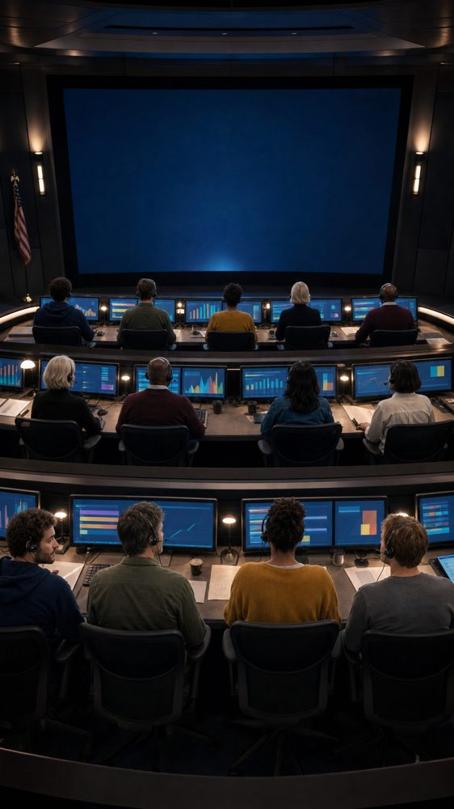 | The dark launch control room, 16 consoles glowing, the big wall screen deep blue. wide from the back, slow push in · unit A, 6s | PA (off): “T-minus two minutes to Black Friday.” (calm, clinical, NASA flat) | Countdown clock T-02:00 top band; super 'Black Friday. 2 minutes out.' · room hum |
| 2. 3.5 to 7.5s setup | 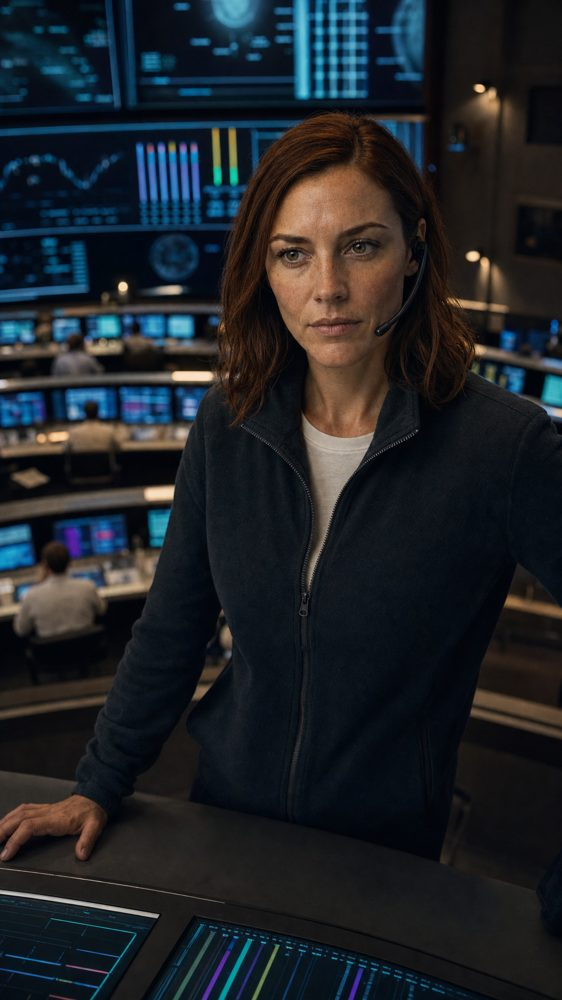 | Riley at the flight director desk on the top tier, headset on, scanning the room. medium close, locked · unit B, 6s | Riley: “All stations, this is Flight. Go, no-go for launch.” (steady, low, in command) | Label FLIGHT · RILEY, FOUNDER |
| 3. 7.5 to 10.5s build | 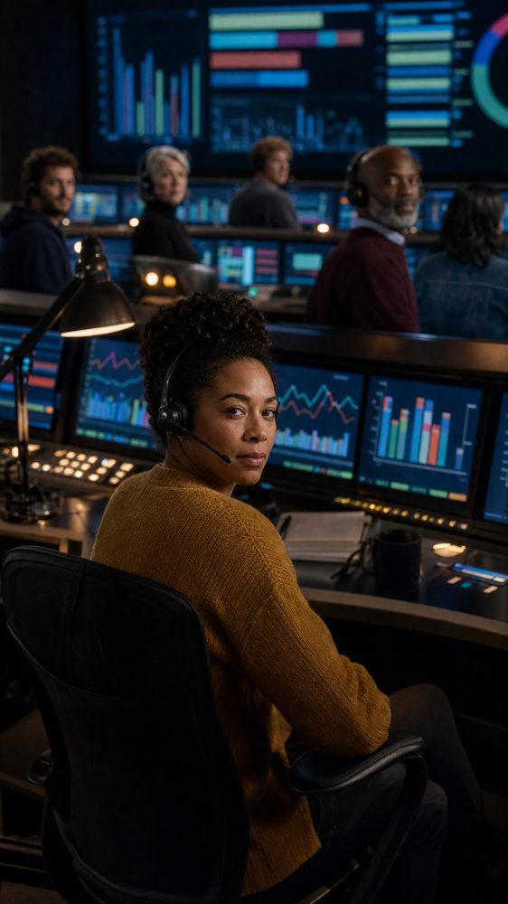 | Mustard-cardigan controller turns to her mic. medium, locked · unit C1, 4s | Customer Voice: “Customer Voice, go. Every ad answers the sizing question.” (crisp, confident) | Console label CUSTOMER VOICE · tick on 'go' |
| 4. 10.5 to 13.5s build | 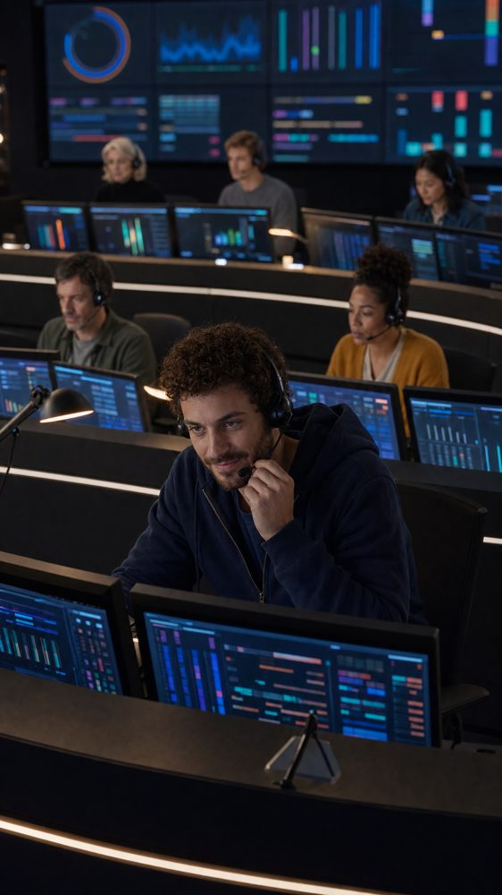 | Navy-hoodie controller leans into his mic. medium, locked · unit C2, 4s | Creative: “Creative, go. Twelve hooks, in our customers' own words.” (quick, a little cocky) | CREATIVE · 12 HOOKS |
| 5. 13.5 to 16.5s build | 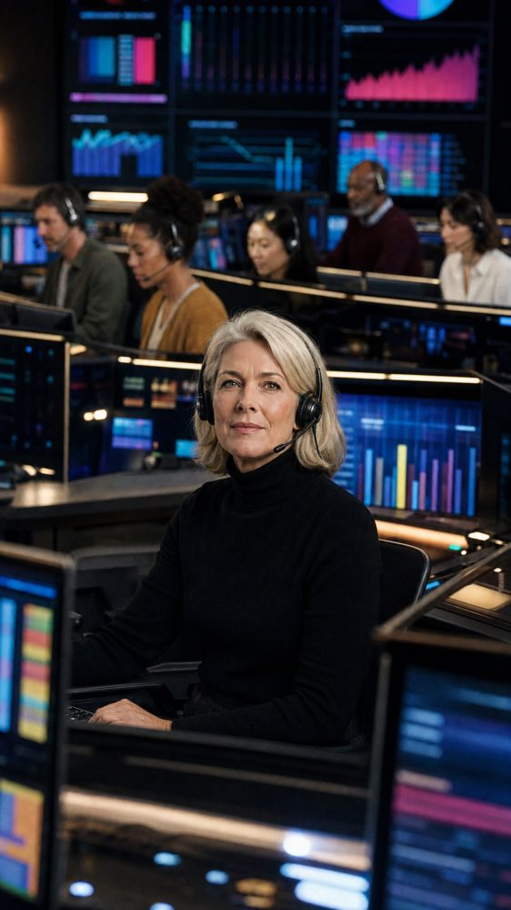 | Black-turtleneck controller, a crisp nod. medium, locked · unit C3, 4s | Offers: “Offers, go. Bundle priced to protect margin.” (precise) | OFFERS · BUNDLE |
| 6. 16.5 to 19.5s build | 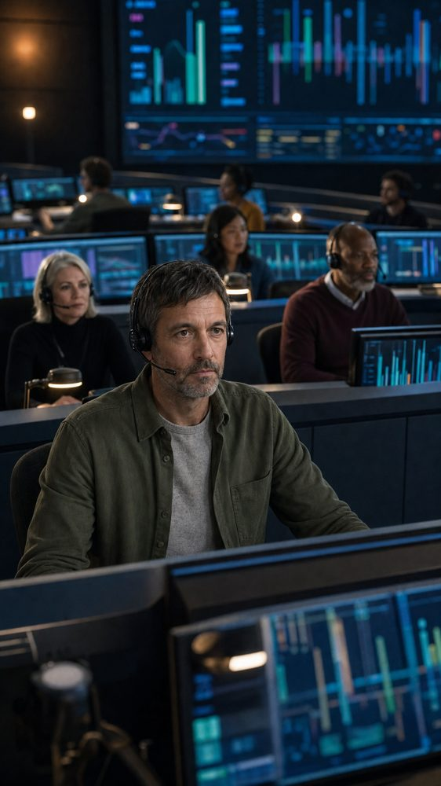 | Olive-overshirt controller sits up. medium, locked · unit C4, 4s | Landing Page: “Landing page, go. Checkout friction, fixed.” (matter-of-fact) | LANDING PAGE · CHECKOUT |
| 7. 19.5 to 22.5s build | 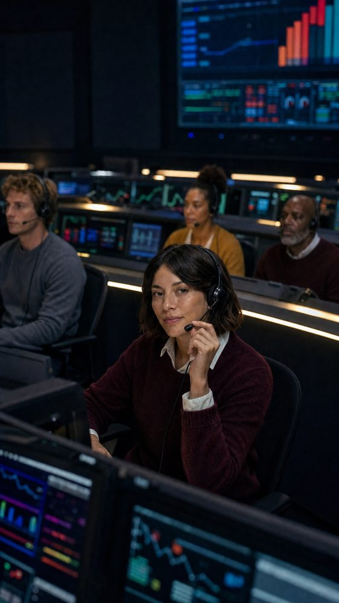 | Burgundy-sweater controller, hand on the mic boom. medium, locked · unit C5, 4s | Recovery: “Recovery, go. Email, SMS and WhatsApp, armed.” (energetic) | RECOVERY · 3 CHANNELS |
| 8. 22.5 to 25.0s build | 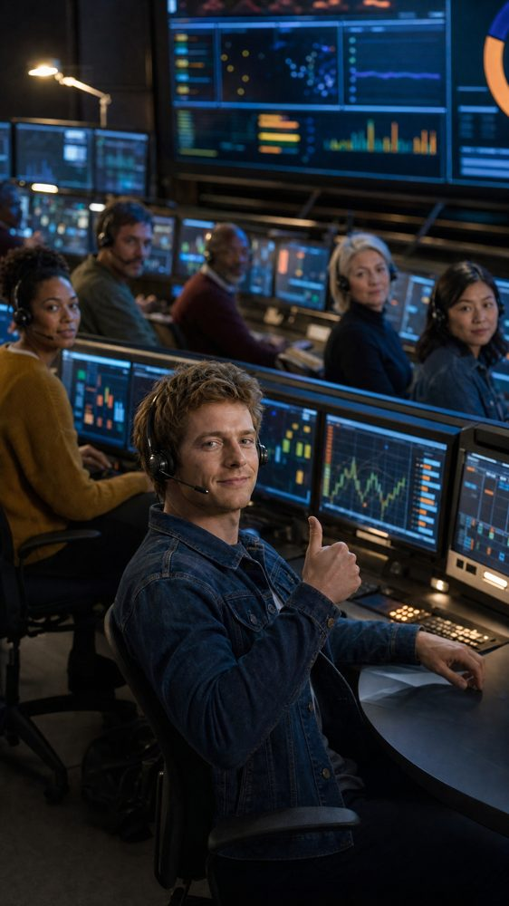 | Denim-jacket controller, a quick thumbs up. medium, locked · unit C6, 4s | Care: “Care, go. Shipping replies, drafted.” (relaxed) | CARE · REPLIES |
| 9. 25.0 to 28.5s build | 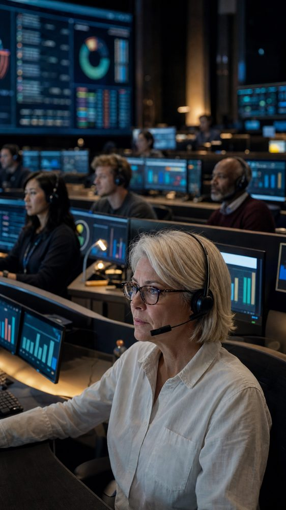 | White-shirt controller, glasses on. medium, locked · unit C7, 4s | Profit: “Profit, go. Break-even ROAS is two point one.” (precise, dry) | PROFIT · BREAK-EVEN 2.1 |
| 10. 28.5 to 34.0s turn | 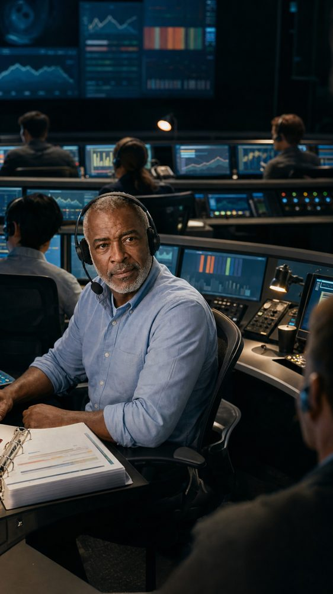 | Walt at the central console, the printed Brand Brain binder open beside him. medium, slow push · unit D, 6s | Walt: “Brand Brain's loaded. Every station is reading from the same page.” (unhurried, dry warmth) | BRAND BRAIN · 6 FILES · LOADED |
| 11. 34.0 to 39.5s turn | Riley looks over the room, takes a breath. medium close, slow push · unit E, 6s | Riley: “Then it's my call.” (quiet) Riley: “We are go for launch.” (firm, rising) | none · score drops to a held note | |
| 12. 39.5 to 41.5s payoff | 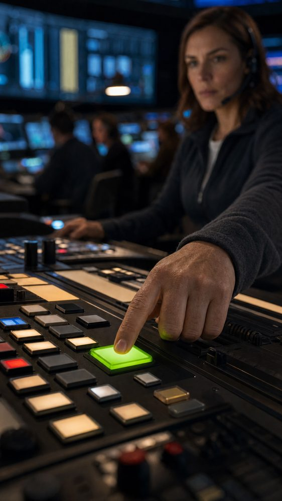 | Her hand presses the lime backlit key. extreme close insert · unit F, 4s | no dialogue | added: deep key clunk (the decision must register) |
| 13. 41.5 to 47.0s payoff | 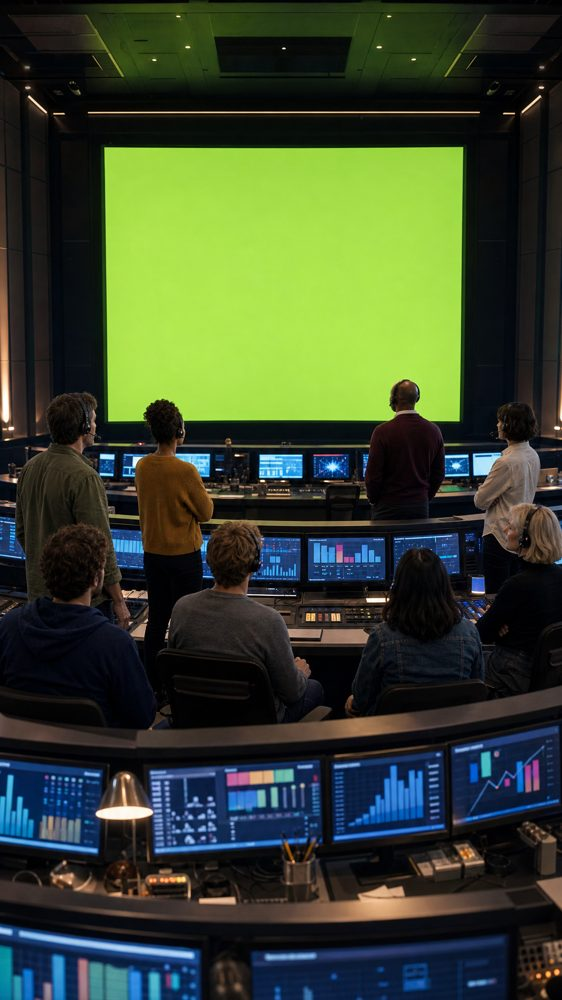 | The wall screen floods lime, the room silhouetted, people rising. wide from the floor · unit G, 6s | PA (off): “Three. Two. One. Store is live.” (calm, then a hint of relief) | STORE LIVE on the wall band · score lifts on 'live' |
| 14. 47.0 to 51.0s payoff | 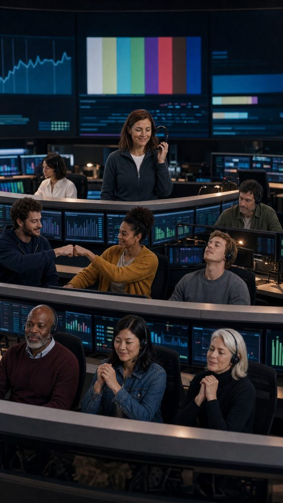 | Quiet relief, fist bumps; Riley smiles and slips her headset off. medium wide · unit H, 4s | no dialogue | First order toast 'Halden · order #1' · added: one soft order chime |
| 15. 51.0 to 56.0s button | 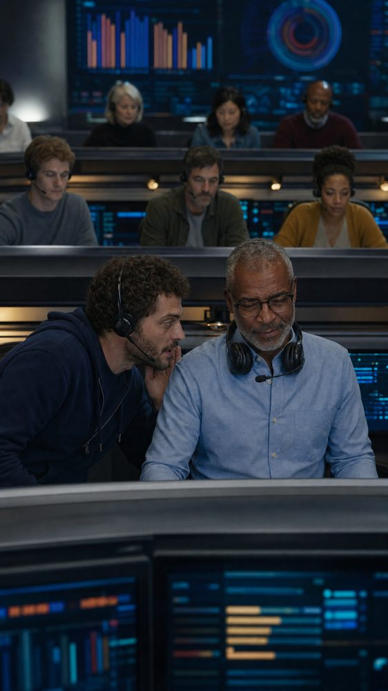 | The navy-hoodie kid leans to Walt and whispers. two-shot, locked · unit I, 6s | Creative: “What did this crew cost?” (whisper) Walt: “Less than your lunch.” (dry, tiny smile) | none |
| 16. 56.0 to 61.0s CTA | End card: the bundle box shot on ink. HyperFrames · graphics | no dialogue | Your launch crew. 16 growth agents · One Brand Brain · ₹699 once · You give the final go · ecomagents.ai |
0 to 7.5 s: cold open on a low pulse at 120 bpm with a ticking-clock motif, one tick per beat, under the PA line; room hum and console beeps native.
7.5 to 28.5 s: the poll: each "go" adds a layer (kick, then bass, then strings, then hats), so the room's readiness is heard building; the score ducks under every line and swells between them.
28.5 to 39.5 s: the tick stops on Walt; a suspended held pad; it thins to almost nothing on "Then it's my call."
39.5 to 47 s: the key clunk lands on silence; a riser under the countdown; on "live" the full score opens into a warm, anthemic lift.
47 to 61 s: the lift resolves to a warm groove under the button, one final hit on the end card that rings out. One continuous ElevenLabs piece composed to the locked cut, in three sections, never restarting.
Added sounds (only what must register): the key clunk and one order chime. Console labels, the countdown and the end card stay silent.
Anchored to the spoken word; never stacked; clear of faces.
| At | Cue | Lands on |
|---|---|---|
| 0.2s | Countdown clock T-02:00, top band, ticking down | the PA line |
| 3.6s | Lower label FLIGHT · RILEY, FOUNDER | her first word |
| 7.6 to 25.1s | Console label per station, slides in from the left edge, clear of faces | each station's name |
| 8 to 28s | Readiness bar 'GO 1/7 … 7/7', top right, one segment lights per 'go' | each 'go' |
| 28.8s | BRAND BRAIN · 6 FILES · LOADED chip beside the binder | 'Brand Brain' |
| 43.5s | STORE LIVE band across the top of the lime wall | 'live' |
| 47.6s | Order toast 'Halden · order #1' | the chime |
| 56.0s | End card | after the button |
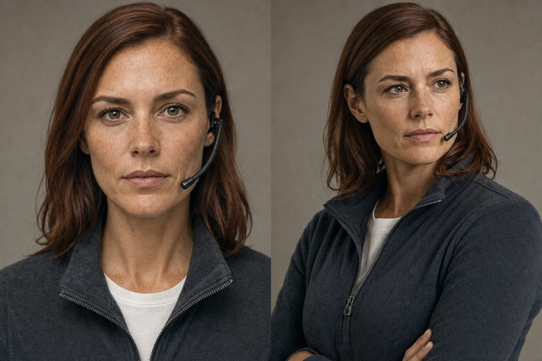
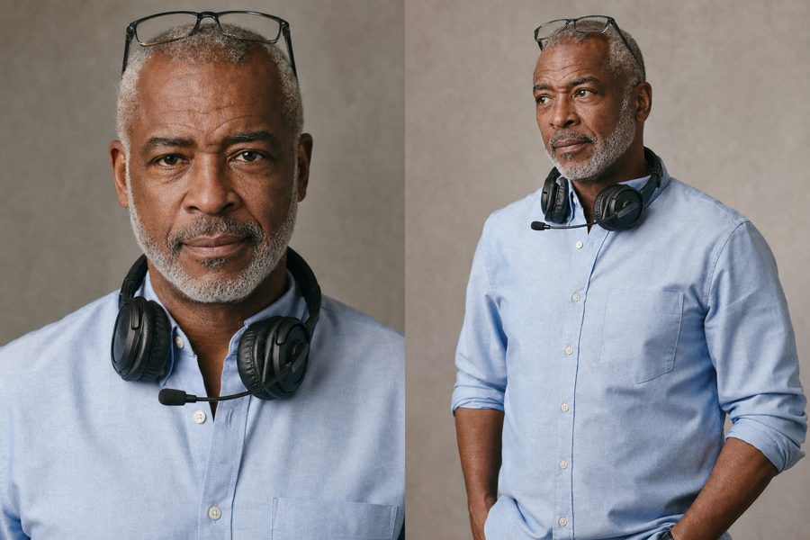
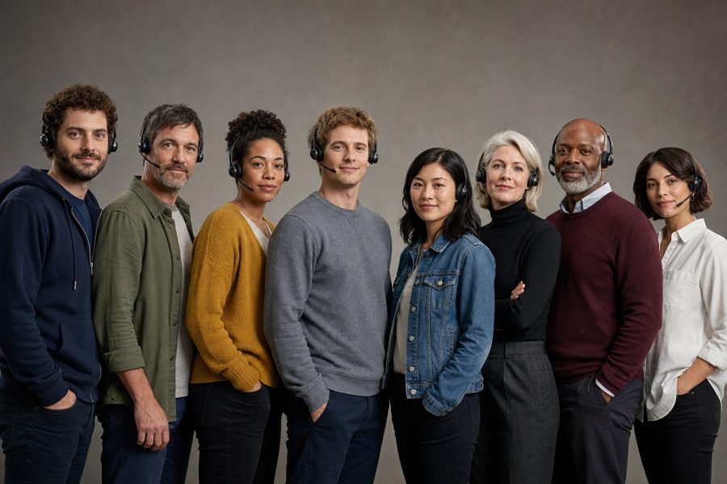
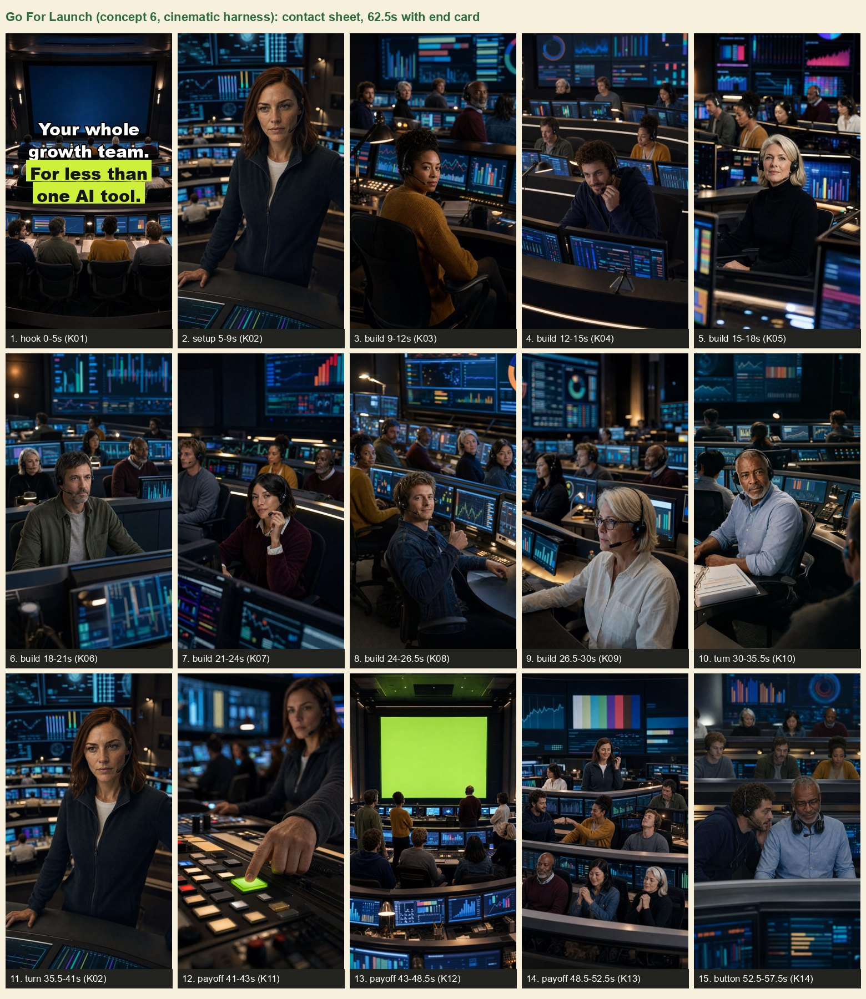
| Item | Cost |
|---|---|
| Cast cards + 14 keyframes (done) | $4.25 |
| Veo 3.1, 15 units, 72 s at 720p (estimate $0.40/s) | $28.80 |
| Re-roll budget (2 takes on speaking units) | $14.00 |
| Score, 3 options | $1.20 |
| Transcription checks | $0.20 |
| Total | about $48 |